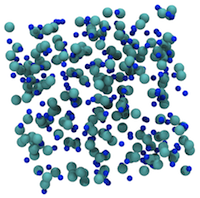
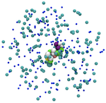
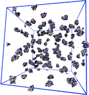

Within a continuum solvent description, the programs "widom" and "hyperbulk" can simulate bulk
electrolyte solutions (or any atomic particles) and calculate activity coefficients, pressure,
radial distribution functions etc. Normally the primitive model is used but it is easy to use
Lennard-Jones, Debye-Huckel or tabulated potentials.
Various geometries are possible: cubic box with periodicity,
the cell model and hyperspherical.

The program in "pka" and variants simulate a single rigid protein in a continuum solvent with or
without explicit salt particles. Using grand canonical insertion the ionization state of
the acidic and basic residues are calculated according to a given (constant) pH. Net charge, capacitance
and dipole moments are evaluated.

The program "isobaric" and variants can simulate an arbitrary number of rigid macromolecules
in the isothermal-isobaric ensemble. This can be used to study structural features of
manybody protein aggregation as well as phase-transitions.